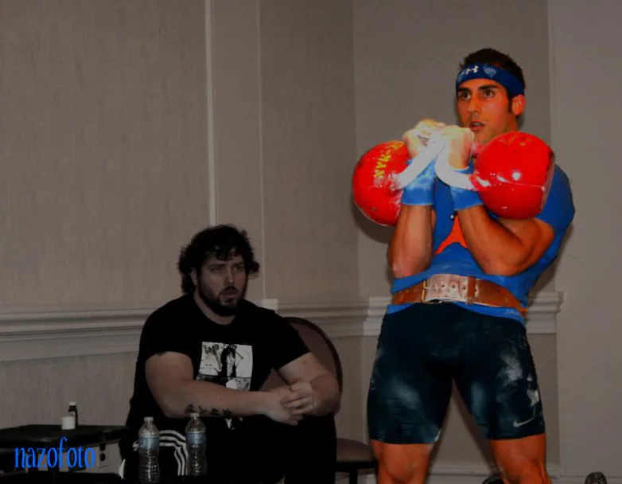

B364 · Must we sacrifice everything to reach our dream goals?
Hi {first_name},
I know that driven people will sacrifice everything for their goals only to arrive and still not feel satisfied.
I’ve been the same way throughout many points of my life.
Back in 2012, I was making my first run at my BIG goal of achieving the Kettlebell Sport Rank - Master of Sport. This elite rank for my bodyweight was 45+ unbroken, Clean and Jerks (no setting the kettlebells down) for 10 minutes with (2) 72lb bells.
This was a HUGE jump for me.

For four+ months, much of life looked like this:
At the end, when the competition came, I arrived close to the goal, but didn’t reach it.
This story was repeated for nearly 4 more years until I finally was "successful."
But success felt empty.
The more sacrifice and discipline (and even suffering to some extent) I endured, the larger the gap between surface-level satisfaction, and true fulfillment felt.
It took me a VERY long time to learn how to better set, train for, and enjoy the process of reaching goals.
Do you resonate with holding yourself back because the process of accomplishing an important goal is so uncomfortable?
Here’s something to meditate on: what could you accomplish if you enjoyed each small step along the way?
Imagine arriving at your next goal and being able to celebrate because you’ve enjoyed the process from the start.
This month’s 90 minute virtual workshop is going to be fire and I’m bringing in Holistic Health Coach and the yin to my yang, Lauren Rose.
Sign up today with a spouse or friend. Use the BOGO offer to send a friend a gift or to make the workshop half price when you go in on it with a friend.
Click here to register, and please email me if you'd like to gift this to a friend and use the Buy One Gift One FREE offer.
Yours In health, Mike |